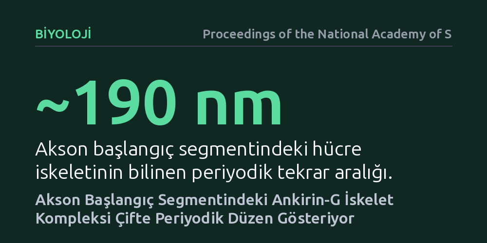

BIYOLOJI · Proceedings of the National Academy of Sciences · 2026-10-26
Araştırmacılar, sinir hücrelerinde elektriksel sinyallerin başladığı akson başlangıç segmentindeki proteinlerin iç mimarisini inceledi. Sonuçlar, Ankirin-G iskele protein kompleksinin sanıldığı gibi tekil değil, her 190 nanometrelik periyot içinde çifte periyodik bir düzenle yerleştiğini ortaya koydu.
Sinir hücrelerinin elektriksel sinyalleri nasıl ürettiğini anlamak için iyon kanallarını tutan protein iskeletinin düşündüğümüzden iki kat daha yoğun ve ayrıntılı organize olduğunu gösteriyor.

Beynimizdeki milyarlarca nöron, bilgiyi elektriksel sinyaller aracılığıyla işler ve iletir. Bu elektriksel sinyallerin, yani aksiyon potansiyellerinin ilk kıvılcımı rastgele bir yerde değil, nöron gövdesinin aksona bağlandığı "akson başlangıç segmenti" adı verilen dar ve özelleşmiş bir bölgede çakar. Bu bölgenin doğru çalışabilmesi, sinyali üreten voltaj kapılı iyon kanallarının ve bu kanalları yerinde tutan moleküler iskelenin kusursuz bir düzen içinde konumlanmasına bağlıdır.
Yaklaşık on yıl önce yapılan keşifler, akson boyunca uzanan hücre iskeletinin yaklaşık 190 nanometrelik düzenli aralıklarla tekrarlanan bir halka yapısına sahip olduğunu göstermişti. Ancak bu 190 nanometrelik temel periyodun içinde, hücreye şekil veren ve kanalları sabitleyen proteinlerin kaçar adet bulunduğu ve birbirlerine göre tam olarak nasıl konumlandığı mikroskopların çözünürlük sınırları nedeniyle aydınlatılamamıştı.
Geleneksel ışık mikroskopları, ışığın dalga boyu sınırlaması sebebiyle birbirine 200 nanometreden daha yakın iki ayrı noktayı ayırt etmemize izin vermez. Hücre biyologları bu engeli aşmak için son yıllarda geliştirilen süper çözünürlüklü mikroskopi tekniklerinden ve hassas protein etiketleme yöntemlerinden faydalandı.
Araştırmacılar, akson başlangıç segmentinin ana iskele proteini olan Ankirin-G ve onunla etkileşen moleküler ortakları floresan moleküllerle işaretleyerek inceledi. Nanometre hassasiyetindeki konumlandırma algoritmaları sayesinde, tekil moleküllerin 190 nanometrelik spektrin iskeleti üzerindeki dağılımı ve yoğunluk haritaları matematiksel olarak modellendi.
Bugüne kadarki genel kabul, Ankirin-G protein kompleksinin 190 nanometrelik her bir iskelet periyodunda tek bir küme halinde yerleştiği yönündeydi. Ancak bu çalışmanın verileri, iskele kompleksinin her periyot içinde tek bir tepe noktası yerine iki belirgin yerleşim odağı oluşturduğunu, yani bir çifte periyodiklik sergilediğini ortaya çıkardı.
Bu bulgu, akson başlangıç segmentindeki iskelenin düşündüğümüzden daha yoğun ve iki kademeli bir yerleşim düzenine sahip olduğunu gösteriyor. İskelet kompleksinin bu çiftlenmiş yerleşimi, sinyal üretiminde kritik görev üstlenen sodyum kanallarının hücre zarına nasıl bu kadar yüksek bir yoğunlukla paketlenebildiğine doğrudan bir açıklama getiriyor.
Akson başlangıç bölgesindeki protein diziliminin bu denli sıkı ve düzenli olması sadece estetik bir mimari detay değildir. Sinir hücrelerinin iletim eşiğini, sinyallerin tetiklenme hızını ve nöronun elektriksel kararlılığını doğrudan bu iskele mimarisi belirler. Mimarideki en ufak bir sapma, sinir iletiminin aksamasına veya aşırı uyarılmaya yol açabilir.
Ankirin-G ve ilişkili iyon kanallarındaki yapısal aksaklıkların epilepsi ve çeşitli nörogelişimsel bozukluklarla bağlantılı olduğu bilinmektedir. İskelenin çifte periyodik yapısının anlaşılması, sinir hücresi uyarılabilirliğinin temel mekanizmalarını daha net kavramamıza ve bu yapılardaki bozulmaları modellememize zemin hazırlamaktadır.